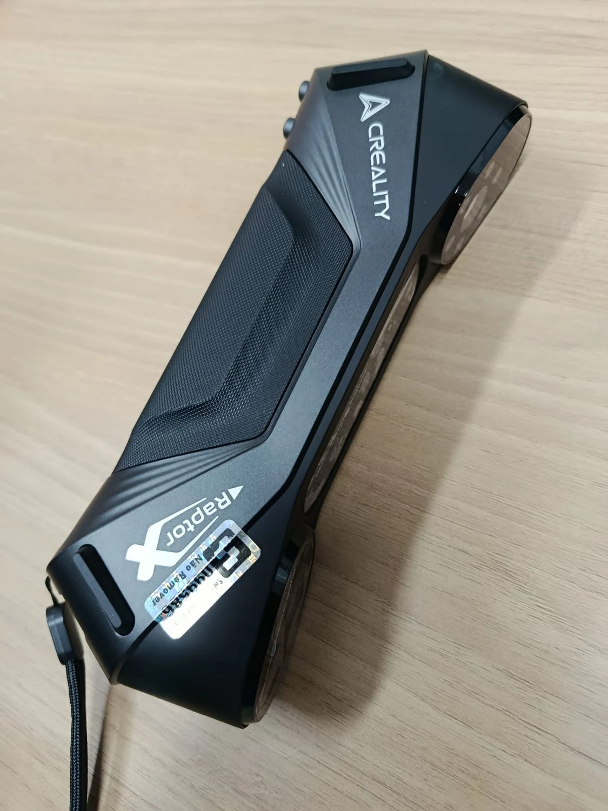
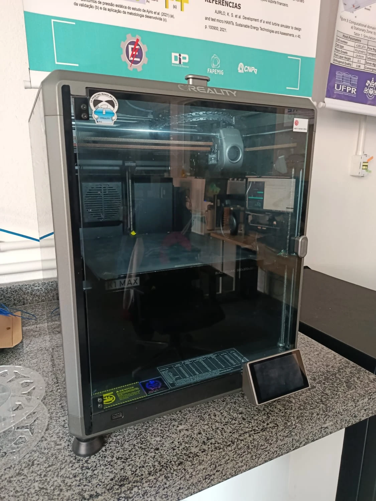
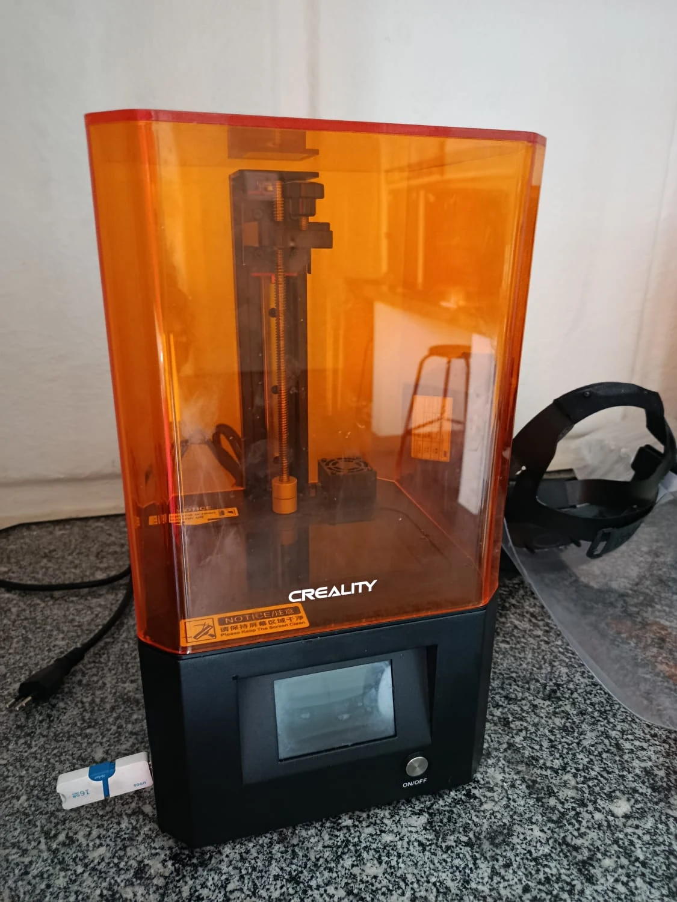
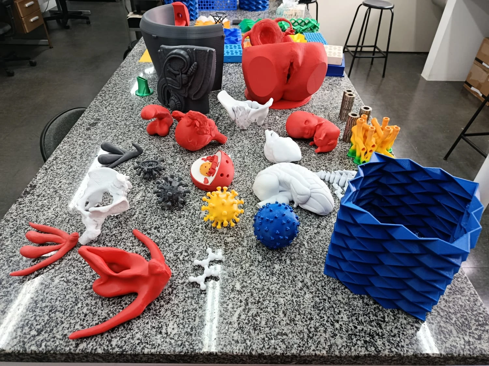

Digitalização 3D
Scanner 3D portátil
Equipamento para captura da geometria de objetos físicos e apoio à engenharia reversa, documentação e desenvolvimento de protótipos.
Marca visível na fotografia: Creality. Modelo a confirmar.Infraestrutura, manufatura digital, impressão 3D e atividades de extensão educativa.
← Voltar à página inicialO LabTIES reúne recursos e competências para apoiar atividades de pesquisa, ensino, extensão e desenvolvimento tecnológico, aproximando concepção, fabricação digital e prototipagem.

Equipamento para captura da geometria de objetos físicos e apoio à engenharia reversa, documentação e desenvolvimento de protótipos.
Marca visível na fotografia: Creality. Modelo a confirmar.
Impressora por deposição de material fundido, utilizada na fabricação de peças, modelos e protótipos para atividades acadêmicas e de pesquisa.

Recurso de fotopolimerização para produção de modelos e peças com detalhes finos. O modelo específico será identificado na próxima atualização.
As atividades de extensão do laboratório incluem o desenvolvimento e a impressão 3D de recursos didáticos destinados ao uso em salas de aula, com aplicações no ensino de Biologia e Educação Sexual.

Os protótipos apresentados na fotografia foram desenvolvidos para apoiar práticas pedagógicas por meio de modelos tridimensionais, recursos táteis e materiais de demonstração. O projeto aproxima manufatura digital, educação e extensão universitária.
A identificação individual dos modelos, o nome oficial do projeto e as instituições parceiras poderão ser acrescentados após validação.
Espaço reservado para estações de trabalho, softwares de simulação e recursos de inteligência artificial.
Espaço reservado para bancadas, equipamentos de ensaio e procedimentos de caracterização de materiais.
Espaço reservado para CNC, impressão 3D de diferentes tecnologias e protótipos desenvolvidos pelo grupo.